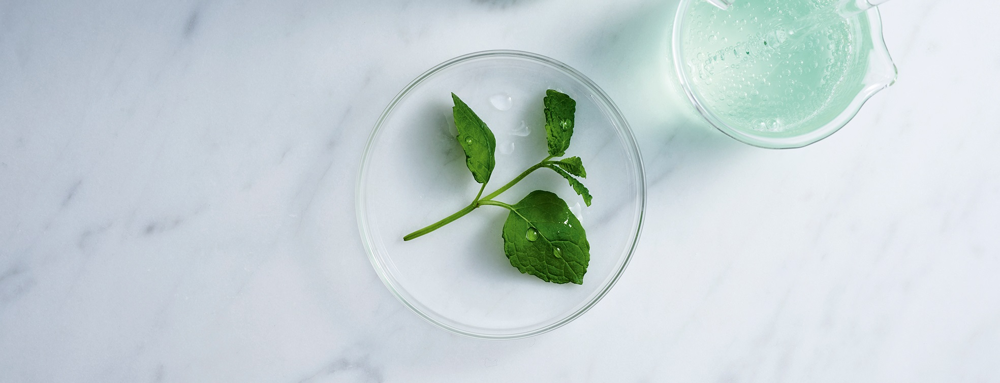
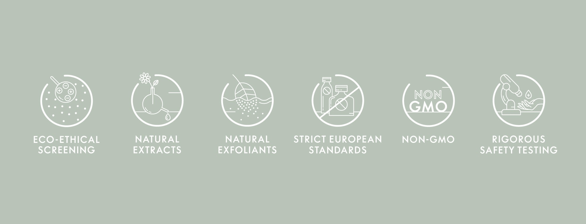

Pošto smo iz Švedske, imamo drugačiji pogled na lepotu i način na koji kreiramo svoje proizvode. Od samog
početka smo smatrali da je kombinacija nauke i prirode važan deo našeg rada jer ljudima nudimo bezbedne,
pouzdane i efektne proizvode. Na tome gradimo svoju reputaciju.
Inspirisani prirodom
Naša priroda u Švedskoj oduvek nam je bila jako važna. Biljke koje žive u našoj surovoj nordijskoj klimi,
izdržavajući mračne, hladne zime i kratka, intenzivna leta, veoma nas inspirišu dok kreiramo proizvode.
Bili smo među prvima u svetu u kreiranju kozmetike od prirodnih ekstrakata kao što je ekstrakt breze; čak
decenijama pre nego što su sa time počeli i ostali brendovi.
I danas nastavljamo da poštujemo i razumemo snagu i benefite koje nude prirodni sastojci – bilo da je u
pitanju rad sa matičnim ćelijama biljaka ili korišćenje prirodnig pilinga u proizvodima koji se ispraju.
Zapravo, svi naši ekstrakti potiču iz prirode i svaki sastojak koji koristimo prolazi rigorozna eko-etička
kontrolisanja kako bi se utvrdio njihov kvalitet, bezbednost i poreklo. Zato tvrdimo da je dobro i za vas
i za planetu.
Moć je u nauci
Sa preko 50 godina iskustva nudimo kvalitetne, jednostavne i visoko efikasne proizvode, kreirane uz pomoć
najnovijih, posvećenih i često revolucionarnih naučnih istraživanja. Konstantno tražimo bolja rešenja i
tehnologije da bismo kreirali inovativne proizvode koji daju rezultate a istovremeno poštuju vas i prirodu.
Naše patentirane tehnologije i inovacije često su dopunjene klinički dokazanim testiranjima proizvoda.
Naši naučnici i stručnjaci pokrivaju brojne discipline i ekspertska polja, uključujući između ostalog ih
fomulacije, hemiju, fiziologiju, biologiju, starenje i analizu kože, nauku o hrani i ishrani, kliniko
testiranje i kontrolu. Ovi eksperti, zajedno sa najmodernijim ustanovama za istraživanje i razvoj,
omogućavaju nam da kreiramo bezbednije i bolje proizvode za naše korisnike.

Standardi po kojima živimo
Naša posvećenost kreiranju proizvoda kojima možete verovati i uz koje možete stati definisani su našim
visokim standardima.

Bezbedne formulacije
Razvijanje bezbednih proizvoda je od početka među našim glavnim fokusima. Ovo znači
da kupovinom i korišćenjem naših proizvoda možete biti sigurni da su prošli stroga
testiranja i odgovaraju najvišim bezbednosnim standardima.
Odgovorni sastojci
Kreiranje visoko kvalitetnih i efikasnih proizvoda nije dovoljno. Naporno radimo na osiguramo
da sastojci naših proizvoda potiču iz prirode i budu iskorišćeni na način koji poštuje okolinu i korisnike.
Ovo znači da svi naši sastojci ispunjavaju sledeće zahteve i standarde: